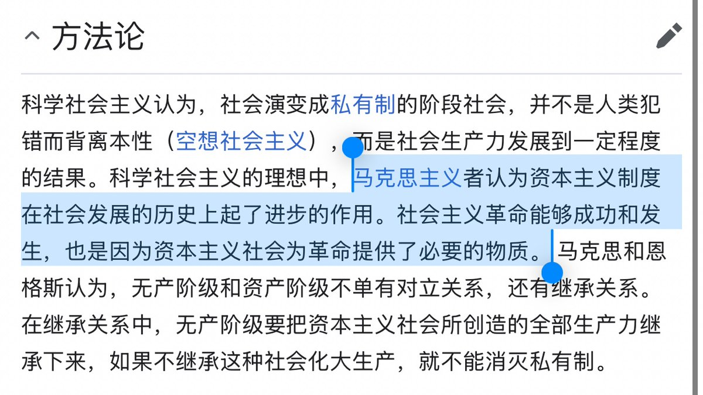

𝐀𝐬𝐡𝐥𝐞𝐲 𝐁𝐥𝐨𝐜𝐤🍥🌹🇪🇸🏳️⚧️🇪🇺
@bolckAshley
@internation0501 @DevilsTrumpetVI 不是不反資本主義，而是緩反慢反優反，有秩序的反，讓有能力的人先反，讓一部分人先反，你要具體情況具體反，不是盲目反，而是精準反，科學反，高效反，有策略的反，讓懂技術的人參與反，讓善於管理的人帶頭反。 讓專業力量處理幫反，也要兼顧特殊狀況靈活反😹

華盛頓革委
@internation0501
@DevilsTrumpetVI @bolckAshley 科学社会主义方法论了解一下 https://t.co/j6E8n8UXlg